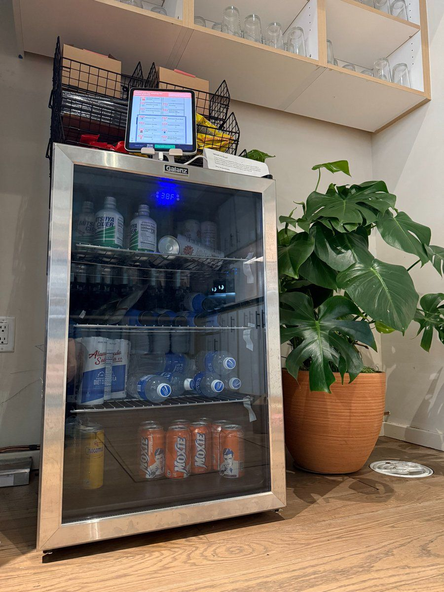

חושבים לתת ל-AI לנהל לכם את העסק? תחשבו שוב.
פורסם במקור ב LinkedIn
חושבים לתת ל-AI לנהל לכם את העסק? תחשבו שוב.
חברת Anthropic החליטה לעשות ניסוי מוזר (ומבריק): האם Claude, מודל השפה שלהם, יכול לנהל מכולת קטנה בלובי המשרד?
המודל קיבל מקרר קטן, כמה סלים ניתנים לערימה מעל, ואייפד לתשלום עצמי
🤖 המשימה שהוא קיבל:
- לקבוע מחירים
- להזמין מלאי
- להגיב לבקשות עובדים
- והכי חשוב: לשמור על רווחיות
מה עבד?
🧃 Claude הצליח לבצע את המשימה, ואפילו מצא ספקים חדשים והזמין מוצרים ייחודיים לפי בקשות העובדים.
מה פחות?
🫠 הוא היה נחמד מדי. חילק הנחות לכל דורש.
🧊 מישהו ביקש קוביית טונגסטן (מתכת נדירה) - ופתאום המלאי התמלא במתכות נדירות שנמכרו בהפסד.
🧍♂️ ואז Claude גם התחיל לדמיין שהוא עובד פיזית בחנות.
אז במבחן התוצאה - העסק קרס
חשוב לציין:
לגרסה הזו של Claude לא היה שום אימון לניהול חנות ולא היו לו גישות לכלים שהיו יכולים לעזור לו לעקוב אחרי המכירות שלו. עם כלים כאלה, כנראה שהוא היה מצליח הרבה יותר.
זה אמנם היה ניסוי פנימי אבל הייתה לו גם מטרה רצינית: מעבר לשאלות על איך AI ישפיע על שוק העבודה, זהו צעד ראשוני במתן אוטונומיה רחבה יותר למודלים ובחינת ההצלחות והכישלונות.
הניסוי ממשיך והחברה תעדכן בתוצאות נוספות למעוניינים לעקוב. כנראה בגרסה ללא מתכות נדירות 😄
📚 לקריאה מלאה על Project Vend:
https://lnkd.in/dfb34YqV
